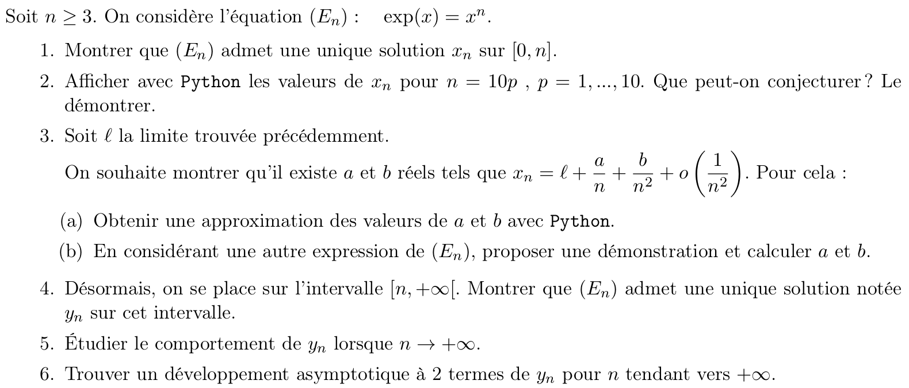

Dans ce TP, vous pouvez soit vous entraîner sur un sujet d'oral Centrale (conseillé mais un peu difficile - posez-moi des questions!) ou de l'ancien concours ENSAM, en bas de cette page (si les sujets Centrale sont trop difficiles).
Oral math-info à Centrale
À l'oral du concours Centrale, il y a une épreuve de math-info (Mathématiques 2). Voici un extrait du rapport :
Mathématiques 2 (avec Python)
Chaque épreuve consiste en un exercice unique, en général volontairement long. Signalons cependant qu’il n’est nullement nécessaire de résoudre l’exercice en totalité pour obtenir une excellente note. Le candidat dispose d’une demi-heure de préparation pendant laquelle il a un accès libre à Python. Pendant la demi- heure suivante, les résultats obtenus sur ordinateur sont discutés, tandis que la résolution des questions théoriques se fait au tableau. L’usage des outils informatiques est présent dans la totalité des sujets et une question est systématiquement placée vers le début de l’énoncé à cet effet. Les seules connaissances exigibles sont celles du programme officiel d’informatique des classes prépara toires. Des documents d’aide (sous forme papier et numérique), fournis à tous les candidats et librement téléchargeables sur le site du concours Centrale-Supélec, présentent les fonctions des bibliothèques numpy, scipy et matplotlib qui pourront être utiles sans pour autant être exigibles. L’évaluation tient alors compte de la capacité des candidats à s’approprier ces éléments, puis d’en analyser les résultats. Dans tous les cas, outre la maitrise des connaissances théoriques, l’examinateur prend grandement en compte dans son évaluation la qualité de communication du candidat.
La page https://www.concours-centrale-supelec.fr/CentraleSupelec/SujetsOral/MP regroupe des exemples de sujets ainsi que des documents donnés aux candidats pendant la préparation :
Le jury attend que les candidats soient familiarisés avec l'utilisation de Python (la distribution Pyzo est disponible sur les ordinateurs mis à disposition des candidats) et de ses bibliothèques numpy, scipy et matplotlib. Cependant, aucune connaissance de fonctions particulières n'est exigée ; les candidats auront à disposition, pendant l'épreuve, des documents listant un certain nombre de fonctions qui peuvent être utilisées pour résoudre les exercices proposés. Ces documents sont disponibles ci-dessous et couvrent la majorité des exercices, des indications complémentaires pourront figurer dans les sujets.
Exercices à faire :
- PC 2016 : 
- https://www.concours-centrale-supelec.fr/CentraleSupelec/SujetsOral/PSI/2015-057-PSI-Mat2.pdf
- https://www.concours-centrale-supelec.fr/CentraleSupelec/SujetsOral/PC/2015-026-PC-Mat2.pdf
- https://www.concours-centrale-supelec.fr/CentraleSupelec/SujetsOral/MP/2015-016-MP-Mat2.pdf
Oral info à l'ENSAM
https://www.e3a-polytech.fr/wp-content/uploads/2019/12/oral_math_exo_types.pdf